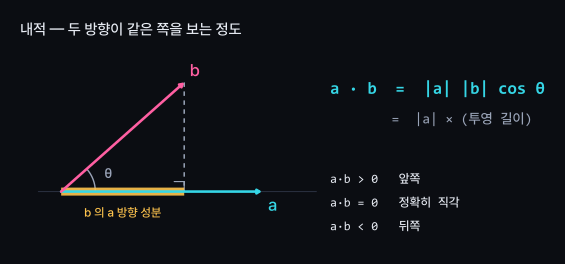
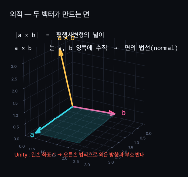
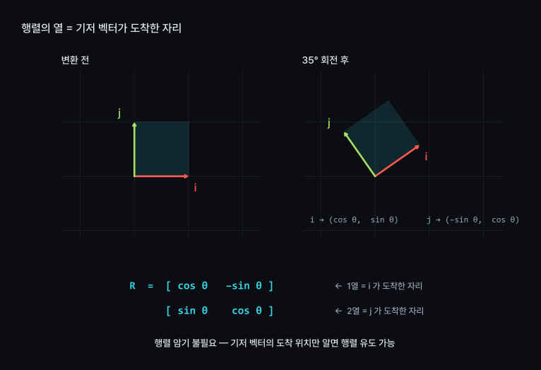
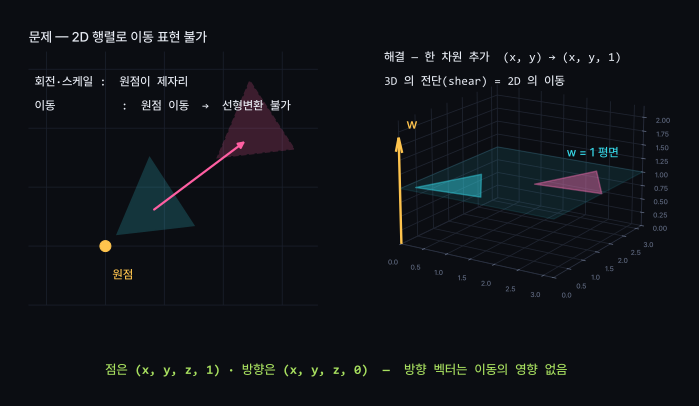
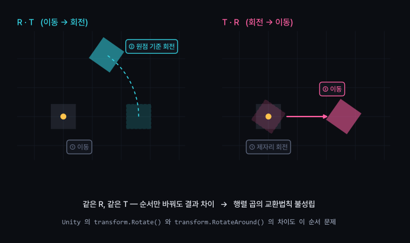
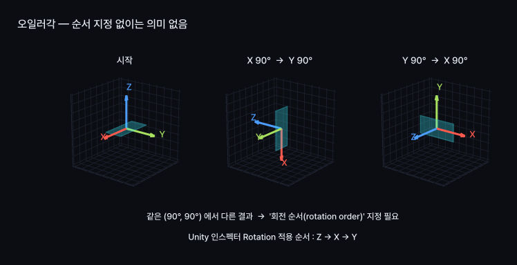
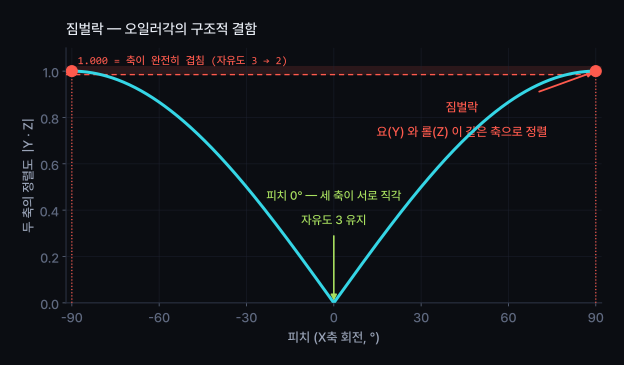
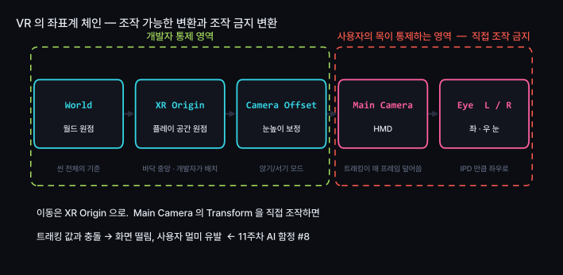
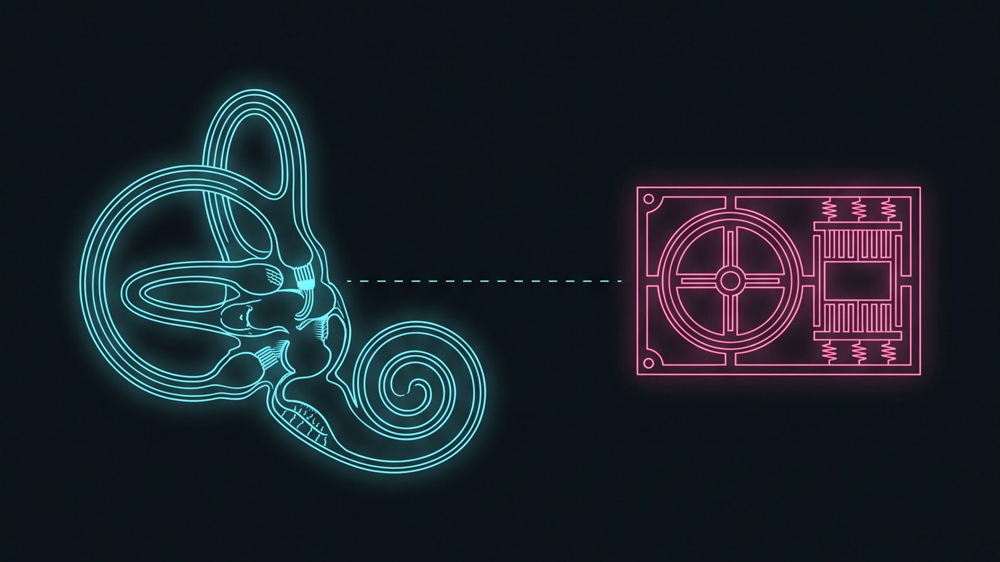
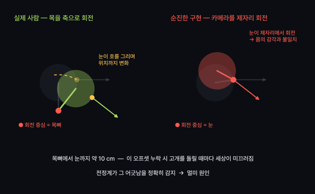

벡터 · 행렬 · 좌표계 변환의 이해와 Unity Transform 실습
기저 벡터의 이동 위치로 행렬 직접 유도 — 암기 불필요
AI 회전 코드의 짐벌락 증상 확인 → 원인 지목
VR의 통제 불가 변환 : 사용자의 머리 → 직접 조작 시 멀미 유발
화면 속 모든 움직임 = 4×4 행렬 곱셈
위치 — 어디에 있는가
원점 이동 시 값 변경
방향과 크기 — 어느 쪽으로 얼마나
원점 이동과 무관
Unity에서는 둘 다 Vector3 타입 → 구분이 흐려짐
이동 변환 적용 시 동작 차이 발생 (뒷부분에서 다시 다룸)
왼손의 엄지=X, 검지=Y, 중지=Z 방향 = Unity의 축
| 도구 | 위 | 좌표계 |
|---|---|---|
| Unity | Y | 왼손 |
| Unreal | Z | 왼손 |
| Blender | Z | 오른손 |
| Maya | Y | 오른손 |
| OpenGL | Y | 오른손 |
Blender 모델을 Unity로 가져올 때 축이 눕는 원인

청록 = 내 시선 a · 분홍 = 대상 방향 b · 노랑 = 외적 a × b
// 적이 내 시야각(60°) 안에 있는가?
Vector3 toEnemy = (enemy.position - transform.position).normalized;
float d = Vector3.Dot(transform.forward, toEnemy);
if (d > Mathf.Cos(60f * 0.5f * Mathf.Deg2Rad)) // = 0.866
Debug.Log("보인다");
각도 계산 없이 비교 — Acos 는 느리고 불필요
코사인 값끼리 비교로 충분 → 그래픽스에서 내적을 활용하는 이유

삼각형 세 점 → 면의 방향 계산 → 조명 계산의 출발점(5주차)
"a 를 b 로 돌리려면 어느 축으로?" → a × b. 쿼터니언의 방식
대상이 내 왼쪽인지 오른쪽인지 판정 (내적으로는 불가)
내적만으로는 좌우 구분 불가 — 왼쪽 30°와 오른쪽 30°의 내적 값 동일
방향까지 필요할 때 외적 활용
| 변환 | 역할 | 원점 | Unity |
|---|---|---|---|
| Scale | 크기 | 고정 | localScale |
| Rotate | 방향 | 고정 | rotation |
| Translate | 위치 | 이동 | position |
Transform 컴포넌트의 세 줄이 전부 → 나머지는 이 셋의 조합
마지막 줄의 «원점 이동» → 이후 문제의 원인

i = (1,0) 을 θ 만큼 회전하면?
j = (0,1) 을 θ 만큼 회전하면?
두 결과를 열로 세운 것 = 행렬
공식 암기 없이 언제든 다시 유도 가능

마지막 성분 w = 1 → 4번째 열(tx, ty, tz) 활성화
이동·회전·스케일·투영을 모두 같은 4×4 곱셈으로 통일
이동 적용
물체의 위치, 정점 좌표
이동 무시
법선, forward, 빛의 방향
Matrix4x4 m = transform.localToWorldMatrix;
m.MultiplyPoint(v); // w=1 로 취급 — 이동 포함
m.MultiplyVector(v); // w=0 로 취급 — 이동 무시
법선에 MultiplyPoint 적용 시 원점에서 멀어질수록 조명 이상
5주차 실습에서 재현

청록 = R·T (이동 먼저) · 분홍 = T·R (회전 먼저)
읽는 방향 주의 :
Unity의 TRS 순서 : Scale → Rotate → Translate
행렬로는 M = T · R · S → 스케일이 가장 먼저 적용
AI에게 "물체를 회전시켜줘" 만 요청 → 둘 중 어느 쪽을 고를지 알 수 없음
회전 중심 명시 = 프롬프트의 역할
"부드럽게 회전시켜줘" 요청 시 AI가 반복하는 실수
세 축을 차례로 회전 · 직관적이고 읽기 쉬움
문제는 «차례» — 순서를 정하지 않으면 같은 숫자에서 다른 결과
Unity의 적용 순서 : Z → X → Y
도입 질문 «같은 (90, 90, 0)인데 왜 다른가» 의 절반에 대한 답

세 개의 링이 중첩된 장치 : 바깥부터 Y → X → Z
가운데 링(X, 피치)을 90° 로 세우는 순간
바깥 링(Y)과 안쪽 링(Z)이 같은 축으로 회전
회전 손잡이는 세 개, 실제 가능한 회전은 2차원 → 자유도 3 → 2
오일러각 표현 방식 자체의 구조적 한계
어떤 순서를 선택해도 반드시 발생하는 지점 존재

«세 축을 차례로» 대신 «임의의 축 하나를 중심으로 한 번에»
차례 없음 → 순서 문제와 짐벌락 없음
| 오일러 | 쿼터니언 | |
|---|---|---|
| 짐벌락 | 있음 | 없음 |
| 보간 | 덜컹거림 | 매끄러움 |
| 누적 오차 | 쌓임 | 정규화로 해결 |
| 사람이 읽기 | 쉬움 | 불가능 |
Unity : 내부는 쿼터니언, 인스펙터 표시만 오일러각
// 만들 때 — 사람이 읽는 각도로
transform.rotation = Quaternion.Euler(0, 45, 0);
// 겨냥할 때 — 방향 벡터에서 바로
transform.rotation = Quaternion.LookRotation(target - transform.position);
// 부드럽게 — 반드시 Slerp
transform.rotation = Quaternion.Slerp(a, b, t);
// 절대 하지 말 것
transform.eulerAngles += new Vector3(0, speed * Time.deltaTime, 0);
마지막 줄 = AI가 가장 자주 작성하는 코드
eulerAngles 는 읽을 때마다 쿼터니언에서 다시 계산 → 누적 시 값이 튀고 짐벌락 발생
부모 기준 · 부모 이동 시 함께 이동
월드 기준 · 체인 전체를 곱한 결과
transform.TransformPoint(localPos); // 로컬 → 월드
transform.InverseTransformPoint(worldPos); // 월드 → 로컬
부모에 Scale (1, 3, 1) 적용 후 자식 회전 →
자식이 전단(shear) 되어 기울어짐
스케일과 회전도 순서 교환 불가
Unity 콘솔 경고 없음 → 결과만 이상해짐
스케일이 필요하면 빈 부모 추가 → 부모에서 회전, 자식에서 스케일
또는 균등 스케일만 사용
VR의 손 모델·UI 스케일 조정 시 자주 발생
변환 체인에 끼어드는 통제 불가 요소 — 사용자의 목
일반 게임은 개발자. VR은?

| 트래킹 모드 | 원점 | 용도 |
|---|---|---|
| Floor (Stage) | 바닥 중앙 | 서서 움직이는 콘텐츠 · 키 자동 반영 |
| Device (Eye Level) | 부팅 시 머리 위치 | 앉아서 하는 콘텐츠 · 리센터 필요 |
모드 선택 오류 → 키 180cm인 사람이 바닥에 파묻히거나 공중에 뜸
코드보다 설정 한 줄이 만드는 사고

왼쪽 · 사람의 내이
서로 직각인 반고리관 3개 = 회전 감지 · 이석기관 = 중력과 직선 가속 감지
오른쪽 · MEMS IMU 칩
자이로스코프 + 가속도계 — 11주차 HMD 트래킹에 활용되는 부품
뇌 : 전정계가 감지한 움직임과 눈이 보는 움직임을 매 순간 대조
둘이 어긋나면 뇌는 독극물 중독으로 해석 → 구토 반응
사이버 멀미의 원인 : 몸과 눈이 감지한 움직임의 불일치
| 전정계 | 눈 | |
|---|---|---|
| 실제로 걷기 | 움직임 | 움직임 |
| 영화 관람 | 정지 | 정지 |
| VR 조이스틱 이동 | 정지 | 움직임 |
마지막 줄이 문제 → VR의 표준 이동 방식이 텔레포트가 된 이유 (이동 과정을 보여주지 않음)

고개를 돌릴 때 눈의 움직임 = 회전 + 이동
오프셋(약 10 cm) 누락 시 고개를 돌릴 때마다 세상이 미끄러짐
전정계가 그 어긋남을 정확히 감지
Quest : 목 모델을 하드웨어에서 처리 — 카메라를 직접 건드리지 않는 한
VR에서 움직이는 대상은 언제나 리그(Rig)
카메라 직접 이동 금지
Camera.main.transform.position += v;xrOrigin.transform.position += v;눈이 두 개 → 변환 체인의 끝이 두 갈래로 분기
같은 씬을 두 번 렌더링 → 비용 두 배 → 프레임 예산 절반
개념 이해 → 정확한 요구 → 오류 판별
무엇을 만들어야 하는지 이론으로 이해
정확한 용어로 AI에게 요구
용어를 모르면 요구 불가
결과가 이론적으로 맞는지 확인
틀렸다면 어디가 틀렸는지
실습의 핵심 : ②와 ③
코드 작성은 AI, 요구와 판별은 학생
[목표]
큐브를 월드 Y축 기준으로 초당 45° 등속 회전시킨다.
[제약]
- 회전 누적에 eulerAngles 를 쓰지 말 것 (짐벌락·값 튐)
- Quaternion 을 유지한 채 누적할 것
- 프레임률과 무관하게 같은 속도 (Time.deltaTime)
- 회전 중심은 물체 자신의 원점
[검증 조건]
- 60fps 와 30fps 에서 10초 뒤 각도가 같을 것
- 어떤 각도에서도 축이 잠기지 않을 것
[비목표]
- 입력 처리, UI 는 만들지 말 것
네 칸 = 수업의 표준 명세 양식
[제약]과 [검증 조건]에 개념 이해도가 드러남
| # | 실습 | 확인할 개념 |
|---|---|---|
| 1 | 위 명세로 회전 스크립트 생성, AI의 첫 응답을 그대로 기록 | 프롬프트 → 결과 대응 |
| 2 | 일부러 eulerAngles 버전을 만들어 짐벌락 재현, 영상 캡처 |
짐벌락 진단 |
| 3 | 부모-자식 3단 체인 구성, 부모에 Scale(1,3,1) 적용 후 자식의 찌그러짐 관찰 |
계층 변환 · 전단 |
| 4 | Main Camera 직접 이동 코드와 부모 리그 이동 코드를 모두 작성해 비교 | 11주차 예비 |
1~3 필수(Core), 4 확장(Stretch) · 제출물 없음, 수업 안에서 완료
Quest 3 개발에 필요한 개발자 인증 — 승인까지 시간 소요
11주차 실습 전 필수
제출 : 개발자 대시보드 캡처 · PLATO
미루면 11주차 실습 불가
결제 수단 등록·본인 확인 포함 → 승인까지 며칠 소요 가능, 가급적 오늘 안에 신청
| 개념 | 핵심 |
|---|---|
| 내적 | 두 방향이 같은 쪽을 보는 정도 · 각도 비교는 코사인끼리 |
| 외적 | 두 벡터가 만드는 면의 법선 · 좌우 판정에도 활용 |
| 행렬 | 열 = 기저 벡터가 도착한 자리. 암기 대신 유도 |
| 동차좌표 | 한 차원 추가로 이동까지 흡수. w=1 은 점, w=0 은 방향 |
| 순서 | R·T ≠ T·R. 회전 중심 미지정 시 AI가 임의로 선택 |
| 짐벌락 | 오일러각의 구조적 결함 · 축이 겹치면 자유도 상실 |
| 쿼터니언 | 축 하나 + 각도 하나 · 순서가 없어 잠김 없음 |
| VR 체인 | 카메라 대신 리그를 이동. 머리의 움직임은 사용자의 영역 |
씬 그래프 · 컴포넌트 구조 · 게임 루프
AI 함정 #2 — 프레임률에 따라 달라지는 속도